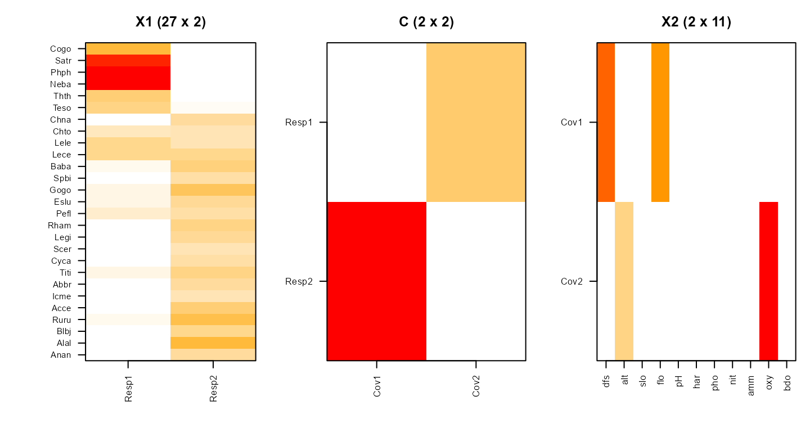
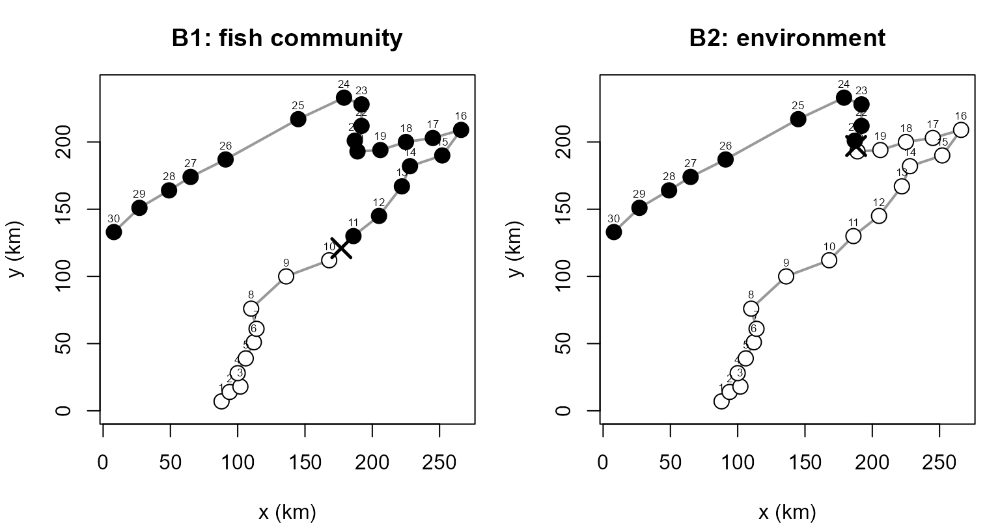

Co-clustering two variable blocks with NMF-RRR (nmf.rrr)
Source:vignettes/nmf-rrr-with-nmfkc.Rmd
nmf-rrr-with-nmfkc.RmdIntroduction
Many studies measure two blocks of variables on the same
individuals – a block of covariates (inputs) and a
block of responses (outputs) – and ask how groups of
covariates relate to groups of responses.
nmf.rrr() answers this by starting from the multivariate
linear regression of the responses on the covariates and giving its
non-negative regression coefficient matrix a
tri-factorization
where (each column summing to one) softly clusters the response variables, (each row summing to one) softly clusters the covariate variables, and is a tested matrix of block correspondences. Because has rank , this is the non-negative, parts-based member of the reduced-rank regression (RRR) family – hence NMF-RRR – related to RRR as NMF is to PCA.
nmf.rrr() and its nmf.rrr.* helpers are the
canonical interface; the names emphasise the reduced-rank-regression
reading. The former nmfae() family names are retained as
deprecated aliases for backward compatibility.
This vignette reproduces the Doubs example (community ecology), where a single dominant upstream–downstream gradient aligns both blocks, so the correspondence is a clean permutation.
The Doubs data
The Doubs data (Verneaux, 1973) record 27 fish species
and 11 environmental variables at 30 sites
along a French river – a classic illustration of canonical
(correspondence) analysis. We take the fish abundances as the
response block and the environmental variables as the
covariate block .
Each variable is mapped to by a per-variable min–max transform
(nmfkc.normalize()), which makes the sign-free
environmental variables non-negative, and both blocks are laid out as
variables sites ().
data(doubs, package = "ade4")
# per-variable min-max to [0,1], then transpose to (variables x sites)
nz <- function(M) t(nmfkc.normalize(as.matrix(M)))
Y1 <- nz(doubs$fish) # responses: 27 fish species x 30 sites
Y2 <- nz(doubs$env) # covariates: 11 environment x 30 sites
dim(Y1)
#> [1] 27 30
dim(Y2)
#> [1] 11 30Fitting NMF-RRR
Element-wise cross-validation (below) selects . Signed models and
inference benefit from several k-means restarts, so we set
nstart = 20 and a tight tolerance.
fit <- nmf.rrr(Y1, Y2, rank1 = 2, rank2 = 2,
epsilon = 1e-8, nstart = 20, seed = 1)
# in-sample, column-centered R^2
Y1hat <- fit$X1 %*% fit$C %*% fit$X2 %*% Y2
R2 <- 1 - sum((Y1 - Y1hat)^2) / sum((Y1 - rowMeans(Y1))^2)
round(R2, 3)
#> [1] 0.435The fit is R2 = 0.435, reproducing the classical
longitudinal zonation of the river.
Response groups (fish guilds)
Each column of is a probability vector over the fish species; the top species per column name the guild.
for (q in 1:ncol(fit$X1))
cat(sprintf("Resp%d: %s\n", q,
paste(rownames(Y1)[order(-fit$X1[, q])[1:6]], collapse = ", ")))
#> Resp1: Neba, Phph, Satr, Cogo, Thth, Teso
#> Resp2: Alal, Ruru, Gogo, Acce, Baba, TitiResp1 is a cold-water upstream guild
(brown trout Satr, Phph, Neba, Cogo,
grayling Thth) and Resp2 a warm-water
downstream guild (roach Ruru, Gogo, barbel
Baba, Alal).
Covariate groups (environmental gradients)
Each row of is a probability vector over the environmental variables.
for (r in 1:nrow(fit$X2))
cat(sprintf("Cov%d: %s\n", r,
paste(rownames(Y2)[order(-fit$X2[r, ])[1:5]], collapse = ", ")))
#> Cov1: dfs, flo, har, nit, pH
#> Cov2: oxy, alt, pH, slo, harCov1 is a nutrient / downstream
gradient (distance from source dfs, flow
flo, nitrate nit, BOD bdo) and
Cov2 an oxic / upstream gradient
(dissolved oxygen oxy, altitude alt, pH, slope
slo).
Choosing the two ranks
Because the attainable fit is bounded by , the in-sample fit
cannot choose the ranks; we use element-wise
cross-validation (nmf.rrr.ecv()), which holds out
entries of and predicts them.
ecv <- nmf.rrr.ecv(Y1, Y2, rank1 = 1:2, rank2 = 1:2,
nfolds = 5, seed = 123)
#> Element-wise CV: 4 (Q,R) pairs, 5-fold, 20 tasks...
#> Q=1, R=1: MSE=0.090948, sigma=0.3016
#> Q=2, R=1: MSE=0.090948, sigma=0.3016
#> Q=1, R=2: MSE=0.090954, sigma=0.3016
#> Q=2, R=2: MSE=0.065768, sigma=0.2565
round(ecv$sigma, 4)
#> Q=1,R=1 Q=2,R=1 Q=1,R=2 Q=2,R=2
#> 0.3016 0.3016 0.3016 0.2565The smallest hold-out error is at .
Inference for the correspondence matrix
The entries of say how strongly each covariate group drives each
response group. nmf.rrr.inference() attaches standard
errors (Fisher + wild bootstrap) and a one-sided boundary
test (each ).
inf <- nmf.rrr.inference(fit, Y1, Y2)
co <- inf$coefficients
print(format(co[order(co$p_value), c("Basis","Covariate","Estimate","SE","z_value","p_value")],
digits = 3))
#> Basis Covariate Estimate SE z_value p_value
#> 3 Resp1 Cov2 3.97e+00 0.505 7.86e+00 1.93e-15
#> 2 Resp2 Cov1 1.40e+01 1.837 7.65e+00 1.03e-14
#> 1 Resp1 Cov1 2.06e-48 0.603 3.42e-48 5.00e-01
#> 4 Resp2 Cov2 9.54e-27 1.004 9.51e-27 5.00e-01is a near-permutation: the upstream guild is driven by the oxic gradient and the downstream guild by the nutrient gradient (both ), while the two off-diagonal paths are essentially zero ().
round(fit$C, 3)
#> Cov1 Cov2
#> Resp1 0.000 3.971
#> Resp2 14.049 0.000Visualising and the two co-clusterings
nmf.rrr.heatmap() shows the response basis , the
correspondence , and the covariate basis together.
nmf.rrr.heatmap(fit)
Clustering the individuals as well as the variables
The same fit clusters the sites. The two score matrices
give each site a profile over the covariate groups and over the
response groups; column-normalising them yields soft memberships
(B2.prob, B1.prob), and the arg-max gives hard
labels (B2.cluster, B1.cluster). So a single
model produces four groupings: two of variables (, ) and two of
individuals (, ).
The Doubs sites are numbered from the source (1) downstream to (30), and that order is never given to the model. A labelling that comes out contiguous along the river is therefore a genuine recovery of the longitudinal gradient, not something the fit was told.
runs <- function(cl, tag) {
cl <- as.vector(cl); r <- rle(cl)
cat(sprintf("%-4s %s\n", tag, paste(cl, collapse = " ")))
cat(sprintf("%-4s %d run(s): %s\n", "", length(r$lengths),
paste(sprintf("%s x%d", r$values, r$lengths), collapse = " | ")))
if (length(r$lengths) == 2)
cat(sprintf("%-4s one break, between site %d and %d\n", "",
r$lengths[1], r$lengths[1] + 1))
cat("\n")
}
runs(fit$B1.cluster, "B1") # response side: fish community
#> B1 1 1 1 1 1 1 1 1 1 1 2 2 2 2 2 2 2 2 2 2 2 2 2 2 2 2 2 2 2 2
#> 2 run(s): 1 x10 | 2 x20
#> one break, between site 10 and 11
runs(fit$B2.cluster, "B2") # covariate side: environment
#> B2 2 2 2 2 2 2 2 2 2 2 2 2 2 2 2 2 2 2 2 2 1 1 1 1 1 1 1 1 1 1
#> 2 run(s): 2 x20 | 1 x10
#> one break, between site 20 and 21Each side splits the river once, but not at the same place: the fish community changes at site 10|11, the environment at 20|21. Sites 11–20 are already downstream-type in their fauna while their measured environment is still upstream-type – the fish respond before the environmental variables recorded here cross over.
The soft memberships show how sharp each transition is.
round(fit$B1.prob[, 8:13], 2) # response side, around the 10|11 break
#> 8 9 10 11 12 13
#> Resp1 0.66 0.53 0.52 0.45 0.46 0.45
#> Resp2 0.34 0.47 0.48 0.55 0.54 0.55
round(fit$B2.prob[, 18:23], 2) # covariate side, around the 20|21 break
#> 18 19 20 21 22 23
#> Cov1 0.39 0.4 0.43 0.51 0.52 0.71
#> Cov2 0.61 0.6 0.57 0.49 0.48 0.29Mapping the clusters onto the river
doubs$xy holds schematic map coordinates for the 30
sites, so the two labellings can be drawn on the river itself.
xy <- doubs$xy
panel <- function(cl, upstream.level, main, brk) {
fill <- ifelse(as.vector(cl) == upstream.level, "white", "black")
plot(xy, type = "n", asp = 1, xlab = "x (km)", ylab = "y (km)", main = main)
lines(xy, col = "grey60", lwd = 2) # river course
points(xy, pch = 21, bg = fill, col = "black", cex = 1.6)
text(xy, labels = 1:30, pos = 3, offset = 0.4, cex = 0.55)
mid <- (xy[brk, ] + xy[brk + 1, ]) / 2 # mark the break
points(mid, pch = 4, cex = 2, lwd = 2.5)
}
op <- par(mfrow = c(1, 2), mar = c(4, 4, 3, 1))
panel(fit$B1.cluster, 1, "B1: fish community", 10)
panel(fit$B2.cluster, 2, "B2: environment", 20)
par(op)Open circles are the upstream type, filled the downstream type, and the cross marks the break. Both transitions are single and contiguous, and the offset between them is the stretch where the two blocks disagree.
Whether supervision matters here is worth checking:
k-means on either raw block, blind to the other block, is
the natural baseline. Cluster labels are arbitrary, so agreement is
measured in a label-switch-invariant way.
set.seed(1)
km1 <- kmeans(t(Y1), 2, nstart = 50)$cluster
km2 <- kmeans(t(Y2), 2, nstart = 50)$cluster
agree <- function(a, b) max(mean(a == b), mean(a != b))
c(B1.vs.kmY1 = agree(km1, as.vector(fit$B1.cluster)),
B2.vs.kmY2 = agree(km2, as.vector(fit$B2.cluster)))
#> B1.vs.kmY1 B2.vs.kmY2
#> 0.6000000 0.8666667
runs(km1, "km1") # k-means on the fish block alone
#> km1 2 2 2 2 2 2 2 2 2 2 2 2 2 2 2 2 2 2 2 1 1 1 2 2 2 1 1 1 1 1
#> 4 run(s): 2 x19 | 1 x3 | 2 x3 | 1 x5
runs(km2, "km2") # k-means on the environment block alone
#> km2 1 1 1 1 1 1 1 1 1 1 1 1 1 1 1 1 2 2 2 2 2 2 2 2 2 2 2 2 2 2
#> 2 run(s): 1 x16 | 2 x14
#> one break, between site 16 and 17The covariate side is close (0.87): the environmental
gradient is strong enough that an unsupervised split of nearly
reproduces . The response side is not (0.60). Left to
itself, k-means on the fish block does not even return a
contiguous stretch of river – it breaks late and then scatters a few
sites back – because unsupervised clustering weights whatever variance
dominates , gradient or not.
is contiguous because it is not computed from at all: it is , the environment read through the correspondence matrix. That is what supervision buys here, and it is also why the two site clusterings can be compared at all – they are tied to each other through , so the 10|11 versus 20|21 offset means something. The same model says which fish guild goes with which environmental gradient, and where along the river each one turns over.
Relation to other methods
Dropping non-negativity, at rank is ordinary reduced-rank regression (RRR): it attains a higher in-sample fit ( on Doubs) but returns signed loadings and no clusters. On these data the two share the dominant fitted direction (leading principal-angle cosine ); they differ in the basis of that subspace – non-negative parts versus signed singular directions – exactly as NMF relates to PCA. An unsupervised tri-NMF of the association recovers the same guilds and gradients here (the gradient is so dominant that supervised and unsupervised co-clusterings coincide), but, unlike NMF-RRR, cannot predict the community at a new site through .
When within-block and cross-block structure disagree – e.g. under – the non-negative, normalized parameterization of NMF-RRR stays well-behaved and exposes cross-structure (one response group driven by several covariate groups) that these baselines miss; see the paper for the nutrimouse and microbiome–metabolome examples.
References
- Satoh, K. & Tokuda, Y. Co-clustering of Response and Covariate Variables by Tri-Factorizing Their Non-negative Regression Coefficient Matrix (manuscript).
- Ding, C., Li, T., Peng, W. & Park, H. (2006). Orthogonal nonnegative matrix tri-factorizations for clustering. KDD.
- Verneaux, J. (1973). Cours d’eau de Franche-Comté. PhD
thesis. (Doubs data, R package
ade4.) ```